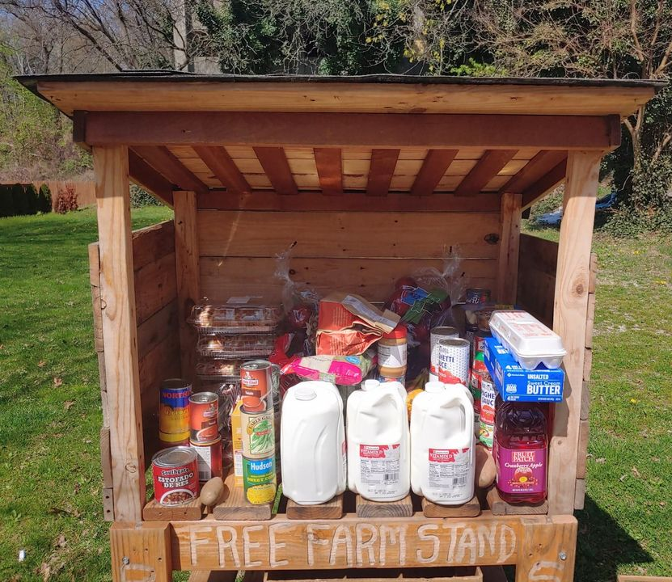

Timeline photos
The community mini food pantry at 38 South Balch has been removed.
This pantry provided food for the community. @[100064805494040:2048:City of Akron, Ohio - Mayor's Office]... do you know anything about this? Because the rumor is that it was YOU that took it.